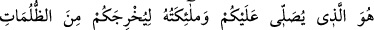
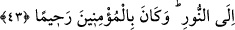

Derken cezbe kuşu, birdenbire yuvasından görünüverir.
Onu gördün mü, sabah oldu demektir, mumu o vakit söndür.
Gözler hakîkati görmeye başladı mı, nur onun nurudur,
Bu nura sahip olan dışa bakar, içi görür.
Zerrede ebedî varlık güneşini görür,
Katrede bütün denizi görür.
Allah Teâlâ’dan bereketleri getirecek hareketleri niyaz ederiz. Çünkü O, bütün
hâcetleri/ihtiyaçları yerine getirendir.
43. Sizi karanlıklardan aydınlığa çıkarmak için üzerinize rahmetini gönderen
O’dur. Melekleri de size istiğfar eder. Allah, mü’minlere çok merhametlidir.
Salât/rahmet ve îtinâ ile “Sizi karanlıklardan aydınlığa çıkarmak için…” Zulmet,
nûrun olmamasıdır. Cehâlet, şirk, fâsıklık ve benzerleri “zulmet” ile ifâde edilir. “Nur”
ile de bunların zıtları ifâde edilir. Yâni cehâlet, şirk, ma‘sıyet, şek, dalâlet, beşeriyyet
ve sıfatları ile rûhânî yaratılmışlıktan O’nun zâtının ve sıfatlarının cezbeleri sâyesinde
ilim, tevhîd, tâat, yakîn, hidâyet, rûhâniyyet ve sıfatları ile rubûbiyyetin nûruna çıkarmak
için “üzerinize rahmetini gönderen O’dur” yâni Allah Teâlâ’dır. “Melekleri de size
istiğfar eder” yâni O’nun melekleri duâ ve istiğfâr ile size îtinâ/ihtimam ederler.
Mânâ şöyledir: Allâh’ın rahmeti ve meleklerin duâsı sebebiyle maksûdu elde ettiniz,
müşâhedeye nâil oldunuz, şerîat nûruyla nurlandınız ve hakîkatin sırrı ile tahakkuka
erdiniz.
Kâşifî şöyle demiştir: “(Karanlıktan aydınlığa) çıkarmaktan maksad, zulmetten nûra
çıkmakta devam ettirmek ve istikamet üzere kılmaktır. Çünkü Allah ve meleklerin duâ
ve rahmeti devam ettiği sürece, onlar karanlıklarda olmazlar.”
Karanlıktan aydınlığa çıkarma konusunda meleklerin insanlar üzerinde bir minneti
olmaması için ve onların buna gücü yetmediğinden âyette “Allah ve melekleri … sizi
çıkarmak için” buyrulmadı. Çünkü hakîkatte hidâyet eden, başkası değil ancak Allah
Teâlâ’dır.
“
”tan murad, rahmet ve istiğfâra da şâmil olan mecâzî mânâdır. Mânâsı kulların
hayır ve maslahatları olan şeye itinâ ve ihtimam göstermektir. Süddî’den rivâyet
edildiğine göre İsrâiloğulları Mûsâ (a.s.)’a: “Rabbimiz salât eder mi?” diye sordular.
Bu söz Mûsâ (a.s.)’a ağır geldi. Allah Teâlâ Mûsâ (a.s.)’a şöyle vahy etti: “Ey Mûsâ!
Onlara de ki: “Elbet ben salât ederim. Benim salât etmem gazabımı söndüren
rahmetimdir.”